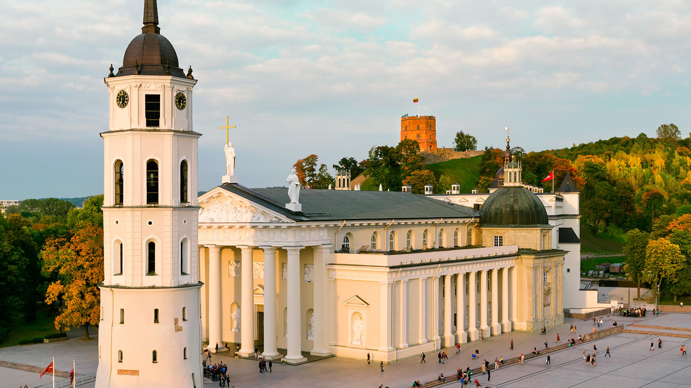
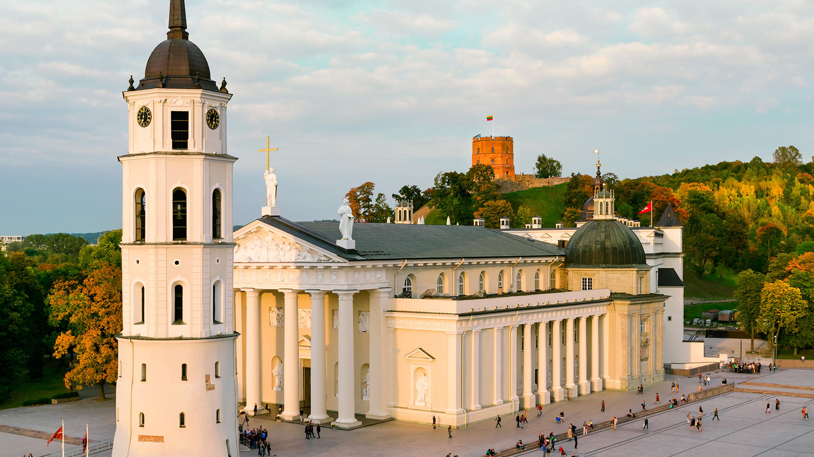

Here's what is waiting for you:
Vilnius is the capital of Lithuania and its largest city, with a population of 542,664 as of 2015. Vilnius is located in the southeast part of Lithuania and is the second largest city in the Baltic states.
Vilnius is known for its baroque architecture, seen especially in its medieval Old Town. But the buildings lining this district’s partially cobblestoned streets reflect diverse styles and eras, from the neoclassical Vilnius Cathedral to Gothic St. Anne's Church.
You are going to visit and learn about Vilnius Old Town, Cathedral Square, Gediminas Castle and Church of st. Anne.
What you will see in Vilnius:
Trakai is a historic city and lake resort in Lithuania with a population of 5,266 (as of 2010).
It lies 28 kilometres (17 miles) west of Vilnius, the capital of Lithuania. Because of its proximity to Vilnius, Trakai is a popular tourist destination.
A notable feature of Trakai is that the town was built and preserved by people of different nationalities. Historically, communities of Karaims, Tatars, Lithuanians, Russians, Jews and Poles lived here.
Part of the Trakai Historical National Park, Trakai Island Castle is a 14th-century fortress in the middle of Lake Galvė. Once a home to Lithuania’s grand dukes, it now houses the Trakai History Museum, with archaeological objects, coins and crafts. On the lake’s southern shore are the stone ruins of the Trakai Peninsula Castle.
Palanga is a resort town on Lithuania’s Baltic coast with the population of 17,600 (as of 2008) It is the busiest summer resort in Lithuania and has beaches of sand (18 km long and up to 300 m wide) and sand dunes.
Palanga Bridge, an L-shaped pier, was constructed in the late 1800s. It joins the lively, pedestrianized Basanavičiaus Street, lined with bars and restaurants.
The neo-Renaissance Tiskevičiai Palace houses the Palanga Amber Museum, which has a large display of amber, and exhibits on the gemstone’s history.
Officially Palanga has the status of a city municipality and includes Šventoji, Nemirseta, Būtingė and other settlements, which are considered as part of the city of Palanga.
What you will see in Palanga:
Klaipėda is a port city in Lithuania, where the Baltic Sea meets the Danė River. It has a population of 154,275 (as of 2016). It is the third largest city in Lithuania and the capital of Klaipėda County.
The old town features German-style, 18th-century wood-framed buildings. Theater Square, the city’s main gathering spot, is home to the neoclassical Drama Theater.
The Port of Klaipėda is the principal ice-free port on the eastern coast of the Baltic Sea. It is the most important Lithuanian transportation hub, connecting sea, land and railway routes from East to West. Klaipėda is a multipurpose, universal, deep-water port. Nineteen big stevedoring companies, ship-repair and shipbuilding yards operate within the port and all marine business and cargo handling services are rendered. The annual port cargo handling capacity is up to 40 Mt. The port operates 24 hours a day, seven days a week, all year round..
The Curonian Spit is a 98 km long, thin, curved sand-dune spit that separates the Curonian Lagoon from the Baltic Sea coast.
The Curonian Spit is home to the highest moving (drifting) sand dunes in Europe. Their average height is 35 meters, but some attain a height of 60 meters.
Several ecological communities are present on and near the Spit, from its outer beaches to dune ridges, wetlands, meadows, and forests.
Its location on the East Atlantic Flyway means it is frequently visited by migratory waterfowl. Between 10 and 20 million birds fly over the feature during spring and fall migrations, and many pause to rest or breed there.
You are going to visit and learn about Curonian National Park.
What you will see in Curonian Spit:
6:00-12:00: Vilnius
12:00-12:30: Travelling Vilnius - Trakai
12:30-13:30: Lunch at a restaurant
13:30-17:00: Trakai
17:00-20:00: Travelling Trakai - Palanga
20:00-21:00: Dinner at a restaurant
21:00-23:00: Free time
23:00-07:00: Night in a Hotel
7:30-08:00: Travelling to Klaipėda
08:00-11:00: Klaipėda
11:00-11:30: Travelling to Palanga
11:30-12:30: Lunch at a restaurant
12:30-17:00: Palanga
17:00-20:00: Free time
20:00-21:00: Dinner at a restaurant
21:00-23:00: Free time
23:00-07:00: Night in a Hotel
8:00-09:00: Travelling to Curonian Spit
9:00-14:00: Curonian Spit
14:00-15:00: Lunch at a restaurant
15:00-19:00: Free time
19:00-22:00: Arriving back to Vilnius
Back